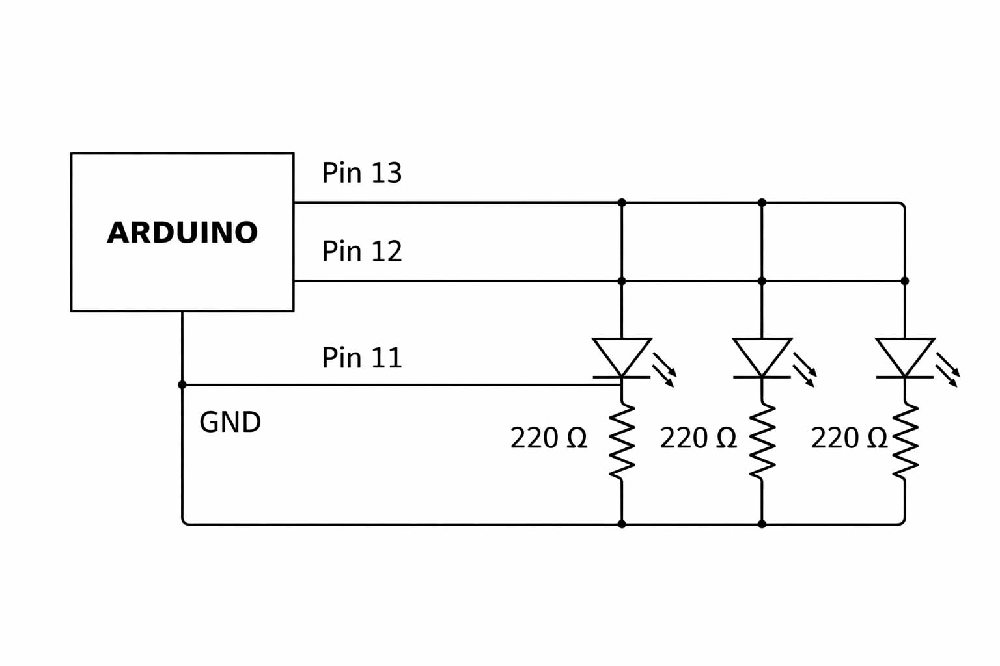
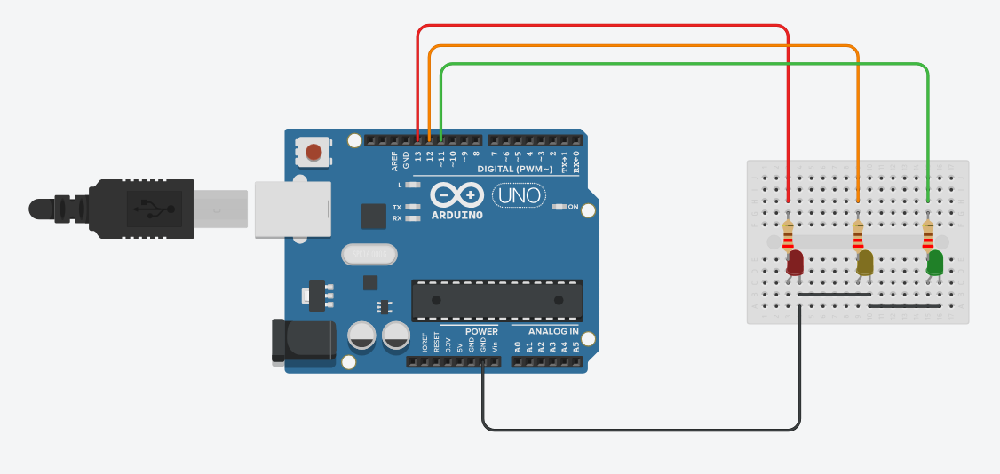
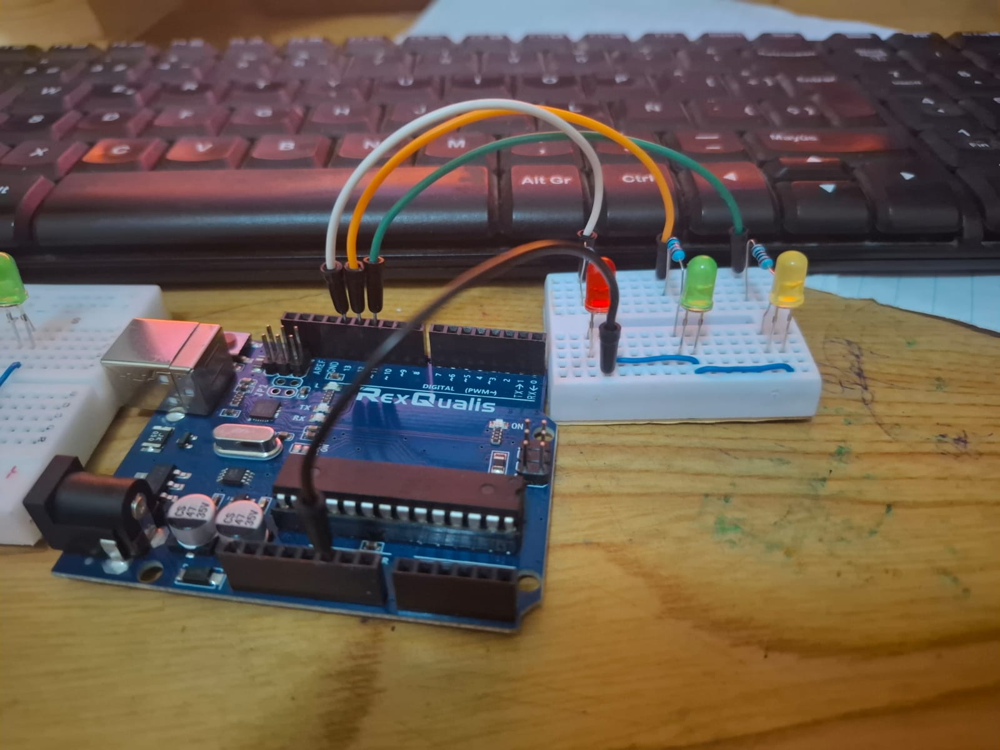

⚡ Diagrama del Circuito

3 LEDs conectados en paralelo controlados por Arduino UNO
🟦 Arduino UNO
Microcontrolador que envía señales digitales (HIGH/LOW) a los pines 8, 9 y 10.
💡 3 LEDs
Cada LED conectado a un pin distinto del Arduino, con su propia resistencia de 220Ω–330Ω.
🔌 Resistencias
3 resistencias de 220Ω o 330Ω, una por cada LED, para limitar la corriente.
🔗 GND Compartido
Los tres LEDs comparten el mismo pin GND del Arduino.
• LED 1 → Pin 8
• LED 2 → Pin 9
• LED 3 → Pin 10
• HIGH ≈ 5V (LED enciende) | LOW ≈ 0V (LED apagado)
🔧 Cómo se Elaboró el Circuito
🟦 Arduino UNO
Placa de desarrollo con microcontrolador ATmega328P.
💡 3 LEDs
Uno por cada pin de salida (8, 9 y 10).
🔌 3 Resistencias
220Ω o 330Ω, una por cada LED para protegerlo.
🛠️ Otros
Protoboard, cables y cable USB para programar el Arduino.
🪛 Cómo conectar cada LED
- Conecta una resistencia al pin digital (8, 9 o 10).
- De la resistencia al ánodo del LED (pata larga).
- El cátodo del LED (pata corta) al pin GND del Arduino.
- Repite para los 3 LEDs. Los tres comparten el mismo GND.
✅ ¿Qué hace el código?
- pinMode configura los pines como salida.
- digitalWrite(HIGH) envía 5V → el LED enciende.
- digitalWrite(LOW) corta el voltaje → el LED se apaga.
- delay(500) espera medio segundo entre estado y estado.
- El ciclo se repite infinitamente → parpadeo continuo.
int led2 = 9;
int led3 = 10;
void setup() {
pinMode(led1, OUTPUT);
pinMode(led2, OUTPUT);
pinMode(led3, OUTPUT);
}
void loop() {
digitalWrite(led1, HIGH);
digitalWrite(led2, HIGH);
digitalWrite(led3, HIGH);
delay(500);
digitalWrite(led1, LOW);
digitalWrite(led2, LOW);
digitalWrite(led3, LOW);
delay(500);
}
💻 Simulación en Tinkercad

Simulación virtual del circuito con Arduino
▶️ Al iniciar simulación
El Arduino recibe energía. Se ejecuta setup() una vez y luego loop() infinitamente.
💡 LEDs parpadeando
El Arduino envía 5V por los pines 8, 9 y 10. La corriente pasa por la resistencia y enciende el LED.
⏱️ delay(500)
Después de 500ms el pin pasa a 0V, la corriente se detiene y el LED se apaga. Ciclo continuo.
⚡ Control de brillo
Solo se encienden y apagan (HIGH/LOW). No se varía intensidad como con un potenciómetro.
🔄 Ciclo interno de la simulación
- Arduino envía 5V por pines 8, 9 y 10 → LEDs encienden.
- Después de 500 ms, los pines pasan a 0V → LEDs se apagan.
- El proceso se repite porque el loop() nunca se detiene.
- Los tres LEDs parpadean al mismo tiempo de forma sincronizada.
📷 Foto Final de la Práctica

Resultado final del circuito armado